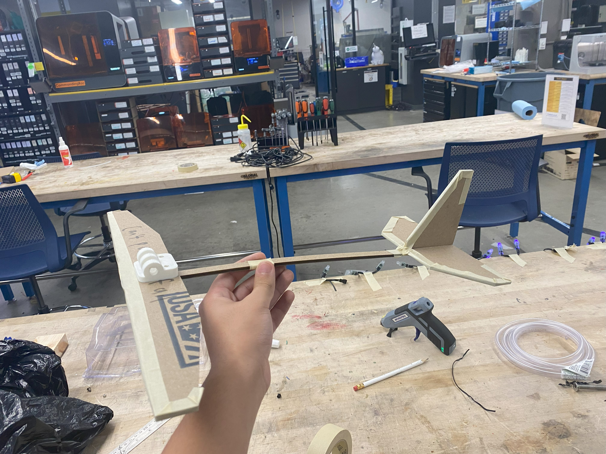

AE 1601 Glider
About
This glider was the end result of a project for my AE 1601(Intro to Aerospace Engineering) class in my first year. The goal of the project was to learn about the basic principles of flight and how these principles influence design decisions in an actual aircraft. The culmination of the project was a fun competition to see which glider flew the furthest, which my glider won. Additionally, I utilized the Invention Studio to develop my glider, particularly the laser cutters and scrap cardboard and mdf which I used to make prototypes and iterate on my design.
